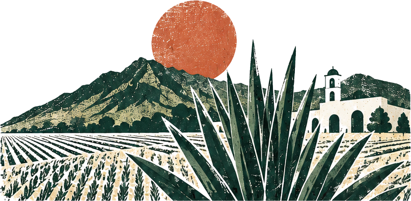
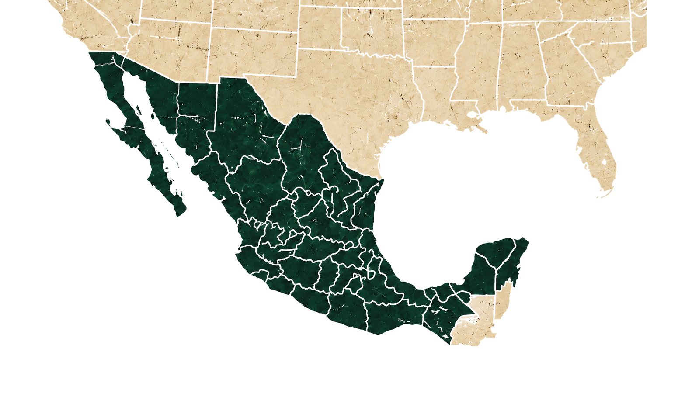
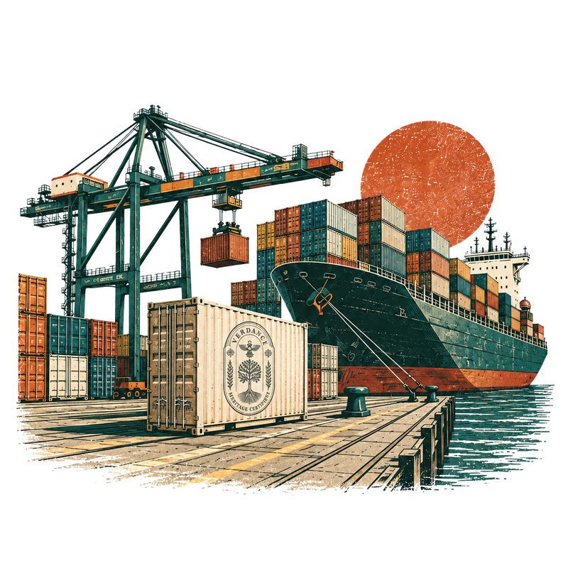
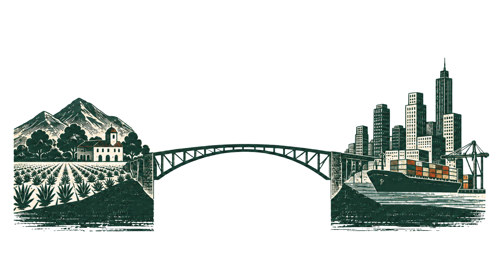

Tres hermanos. Un corredor.
Verdance nació de tres hermanos que crecieron en México y de un negocio familiar que comercia a través de la frontera desde 2000. Desde dentro de ese comercio, David, Ryan y Andrew Landry vieron cómo se rompían relaciones prometedoras: demasiados intermediarios quedándose con una parte, calidad que cambiaba de un envío a otro, diferencias culturales de ambos lados y un sistema tan complicado que productores y compradores a menudo terminaban trabajando unos contra otros. Durante años ellos mismos operaron en medio, buscando márgenes más justos. Verdance es el siguiente paso. En lugar de tomar un margen, salimos de él por completo. Calificamos a los productores, mantenemos una calidad y un cumplimiento consistentes, y simplificamos cómo se integra el abasto, para que compradores en EE. UU., Europa y Medio Oriente compren directamente en el origen, en relaciones hechas para durar.

Fundador y CEO
David Miguel Landry
Dirige la empresa, sus alianzas y la operación de cada programa.
Fundador y CTO
Ryan Thomas Landry
Construye los sistemas que mantienen en orden pedidos, envíos y registros.
Fundador y CMO
Andrew Stephen Landry
Dirige la marca Verdance y nuestras relaciones con compradores y aliados.
Los ingredientes ancestrales de México, listos para su programa.
- Vainilla, originaria de Veracruz y cultivada desde hace siglos por los totonacas de Papantla.
- Cacao, preparado por los olmecas en la costa del Golfo hace casi 4,000 años.
- Miel, de la tradición maya de la meliponicultura.
- Maíz nativo, domesticado por primera vez en México.
- Café, cultivado en las montañas de Veracruz desde la década de 1790.
Hacemos que abastecerse de ellos sea sencillo: productores calificados, origen documentado y una ruta de abasto que funciona.
Pregúntenos por otros productos tradicionales disponibles.
Cinco ingredientes.
Miles de años.
Un origen.
La distancia no es solo geográfica.
Visibilidad
Encontrar productores que merecen la atención de un comprador serio.
Preparación
Documentación, inocuidad alimentaria y preparación para exportar, confirmadas antes del primer pedido.
Ejecución
Un camino claro de la orden de compra a la entrega.
Verdance acorta esa distancia.

Los mismos productos
extraordinarios.
Un camino más claro
al mercado.
Validar. Estructurar. Operar.
Tres pasos de la primera conversación al abasto recurrente.
Productores reales.
Abasto constante.
Validar
Calificamos al productor y confirmamos que el producto cumple sus especificaciones y su mercado.
Estructurar
Definimos especificaciones, roles, documentación y la ruta de importación antes del primer pedido.
Operar
Coordinamos envíos, registros y reportes para que los pedidos se repitan.
La mayoría de los programas comienza con una evaluación de preparación bien delimitada.
También se ofrece por separado: diagnóstico de patrimonio y marca · cumplimiento y preparación comercial · sistemas operativos · desarrollo de plataformas

No somos intermediarios. Somos la capa operativa.
Verdance no adquiere la propiedad del producto, no lo revende ni le agrega sobreprecio. Los compradores compran directamente a los productores; nosotros nos encargamos de la validación, la documentación y la coordinación detrás.
Directo por diseño
Comprador y productor negocian directamente. Sin márgenes de intermediación.
Documentado desde el inicio
El origen, el cumplimiento y los registros de cada lote acompañan cada envío.
Pensado para pedidos recurrentes
Seguimos presentes después del primer pedido para que la ruta siga funcionando.

La relación está en el centro. Construimos el sistema a su alrededor.